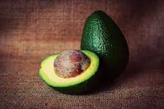

Alpukat, yang juga dikenal sebagai alligator pear atau avocado pear (Persea americana), adalah pohon hijau abadi dari keluarga laurel (Lauraceae). Tanaman ini berasal dari Amerika dan pertama kali dibudidayakan di Mesoamerika lebih dari 5.000 tahun yang lalu. Alpukat dihargai karena buahnya yang besar dan memiliki kandungan minyak yang tinggi.Pohon ini kemungkinan berasal dari dataran tinggi yang menghubungkan Meksiko bagian tengah-selatan dan Guatemala.Secara alami, pohon alpukat tumbuh di wilayah yang membentang dari Meksiko hingga Kosta Rika.
Alpukat secara botani dikategorikan sebagai beri besar yang mengandung satu biji besar di dalamnya.Penelitian genom alpukat menunjukkan bahwa evolusinya dipengaruhi oleh peristiwa poliploidi dan bahwa varietas komersialnya berasal dari hibrida. Pohon alpukat sebagian dapat melakukan penyerbukan sendiri, tetapi umumnya diperbanyak melalui teknik pencangkokan untuk mempertahankan kualitas buah yang konsisten. Saat ini, alpukat dibudidayakan di berbagai negara dengan iklim tropis dan Mediterania. Hingga tahun 2023, Meksiko menjadi produsen alpukat terbesar di dunia, menyumbang 29% dari total panen global yang mencapai 10,5 juta ton.
Buah alpukat dari varietas domestik memiliki daging berwarna hijau keemasan yang lembut dan bertekstur mentega saat matang. Bergantung pada kultivarnya, kulit alpukat bisa berwarna hijau, coklat, ungu, atau hitam, dengan bentuk yang dapat menyerupai buah pir, telur, atau bulat. Untuk keperluan komersial, buah ini biasanya dipanen dalam keadaan belum matang dan dibiarkan matang setelah dipanen. Kepadatan nutrisi dan kandungan lemak tinggi dalam daging alpukat menjadi nilai tambah dalam berbagai jenis masakan, termasuk diet vegetarian.
Di daerah produksi utama seperti Chili, Meksiko, dan California, kebutuhan air yang tinggi dalam budidaya alpukat memberikan tekanan besar terhadap sumber daya lokal.Produksi alpukat juga dikaitkan dengan berbagai dampak lingkungan dan sosial, termasuk deforestasi serta isu hak asasi manusia akibat sebagian kendali produksi di Meksiko yang dikuasai oleh kelompok kejahatan terorganisir.[
Alpukat mentega adalah jenis alpukat yang memiliki tekstur lembut, pulen, dan rasa manis yang sering disebut karena dagingnya yang empuk seperti mentega, bukan varietas spesifik. Ciri-cirinya antara lain daging buah berwarna kuning, kulit hijau tua yang bisa berubah menjadi hijau keunguan saat matang, serta biji yang mudah lepas. Buah ini kaya nutrisi, termasuk lemak sehat, serat, dan vitamin.
Perbedaan utama alpukat mentega dan alpukat biasa terletak pada tekstur, rasa, dan warna kulit saat matang. Alpukat mentega memiliki daging buah yang lebih tebal, lembut, dan creamy dengan rasa lebih manis dan gurih, sementara alpukat biasa cenderung lebih berserat dan berair. Saat matang, kulit alpukat mentega akan berubah menjadi kecoklatan, sedangkan alpukat biasa seringkali tetap hijau.
PEMBAYARAN DI TEMPAT / COD
Hanya untuk Jakarta, Bekasi, dan Depok
Potongan Ongkir Rp. 5.000,-
UNTUK PEMBELIAN VIA TRANSFER
Memiliki anti aging yang bisa mendorong perawatan kulit alami
Membantu mencegah terjadinya osteoporosis
Membantu menurunkan tingkat stres, meringankan rasa sakit
Membantu treat diabetes, pendarahan menstruasi, insomnia
| No | Jenis Alpukat | Harga 1 Kg | Harga 2 Kg | Harga 3 Kg |
|---|---|---|---|---|
| 1 | Alpukat Mentega | Rp. 35.000,- | Rp. 65.000,- | Rp. 90.000,- |
| 2 | Alpukat Miki | Rp. 50.000,- | Rp. 90.000,- | Rp. 135.000,- |
| 3 | Alpukat Aligator | Rp. 30.000,- | Rp. 55.000,- | Rp. 80.000,- |
| 4 | Alpukat Kendil | Rp. 40.000,- | Rp. 75.000,- | Rp. 100.000,- |